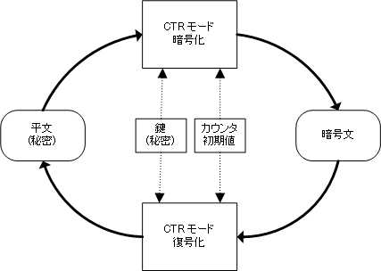
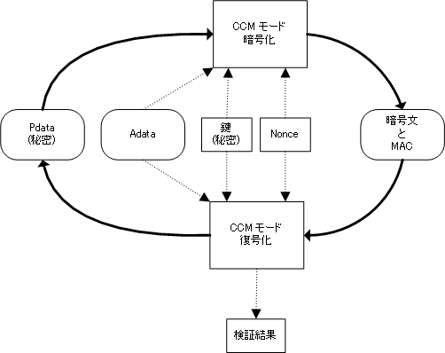

TWL-SDK AES 暗号ライブラリは AES アルゴリズムを使用した暗号化処理を提供するライブラリです。 単純な暗号化を行う CTR モードと、それに加えてデータの改変を検出するための 仕組みを持った CCM モードの 2 つの暗号モードをサポートしています。
TWL-SDK AES 暗号ライブラリ関連文書で使用される用語を説明します。
ここでの説明は TWL-SDK AES 暗号ライブラリ関連文書内での使われ方を示すものであり、
各用語の一般的な意味とは異なることがあります。
| 秘密 | 暗号において公開してはならないこと。またはそのような情報。 |
|---|---|
| 暗号化 | 情報をなんらかの復元可能な方法で変換し、表面的な情報を失わせること。 |
| 暗号化を行う対象となるデータ。文字列データだけを指すのではなく任意のバイナリ列を指す。 | |
| 暗号文 | 平文を暗号化した結果。平文と同様に一般的には文字列データではなくバイナリ列を指す。 |
| 復号化 | 暗号文を平文にもどすこと。復号とも。 |
| ブロック暗号 | 固定長の平文を暗号化して固定長の暗号文を出力する暗号アルゴリズム。 |
| AES | ブロック暗号アルゴリズムの一つで、16 バイトの平文から暗号化された 16 バイトの暗号文を生成する。 |
| MAC | Message Authentication Code （メッセージ認証コード）の略でデータが変更されていないことを確認するためのデータ。 |
| 暗号モード | ブロック暗号を使用して任意長のデータを暗号化するためのアルゴリズムを指す言葉。 |
| CTR モード | 暗号モードの一つ。CounTeR モード。 |
| CCM モード | 暗号モードの一つで CTR モードの処理に加え MAC の付加を行う。Counter with Cipher block chaining Message authentication code モード。 |
| Adata | CCM モードの入力のうち MAC の対象となるが暗号化は行わないデータのこと。 |
| Pdata | CCM モードの入力のうち MAC の対象となり、かつ暗号化を行うデータのこと。 |
| 鍵 | 同じ平文、同じ暗号アルゴリズムを使用しても異なる暗号文となるようにするためのデータ。秘密である。 |
| カウンタ初期値 | CTR モードで同じ鍵、同じ平文、同じ暗号アルゴリズムを使用しても異なる暗号文となるようにするためのデータ。 秘密ではない。暗号化を行うごとに異なる値を用いなければならない。 |
| Nonce | CCM モードで同じ鍵、同じ平文、同じ暗号アルゴリズムを使用しても異なる暗号文、異なる MAC となるようにするためのデータ。 秘密ではない。暗号化を行うごとに異なる値を用いなければならない。 |
| 署名 | MAC を付加すること。 |
TWL-SDK AES 暗号ライブラリでサポートしている 2 つの暗号モードとデータの関連は 以下のようになります。
CTR モードでは単純に平文を暗号化します。 暗号文を復号化するには暗号化時と同じ鍵とカウンタ初期値が必要です。
CCM モードでは Pdata を暗号化すると共に Pdata の正当性を検査するための MAC を生成します。 MAC には Pdata の他に Adata と呼ばれる暗号化はしないが正当性を検査する 必要があるデータ（データサイズなどの任意のデータ）の情報を含めることもできます。 暗号文を復号化するには暗号化時と同じ鍵と Nonce が必要です。 暗号文の検証を行うにはさらに暗号化時と同じ Adata が必要です。
暗号化 / 復号化処理のバイトあたりのパフォーマンスはおおよそ以下のようになります。 これに加えて暗号化 / 復号化処理ごとにおよそ 60000 サイクル（@ 134.06 MHz）のオーバーヘッドがあります。
| モード | 処理サイクル数 （@ 134.06 MHz） | |
|---|---|---|
| CTR モード | 8.4 サイクル / バイト | |
| CCM モード | Adata | 4.9 サイクル / バイト |
| Pdata | 8.4 サイクル / バイト | |
TWL-SDK AES 暗号ライブラリは一般的な AES ライブラリと比較して以下の制限があります。
CTR モードはそのアルゴリズム上、暗号文の任意のビットを反転すると、それを復号化して得られた 平文は元の平文と比べて対応する箇所のビットが反転するという性質があります。
例えば、以下の上段のようなビット列の平文を暗号化して 下段のようなビット列の暗号文が得られたとします。
平文： 000110100001111111001001010100011001000010100111110110010001001
暗号文： 010000100110111101000111100010110111110001010011001001000011101
ここで暗号文の任意のビット、例えば33ビット目を反転したものを暗号文’とすると、
暗号文’： 010000100110111101000111100010111111110001010011001001000011101
暗号文’を復号化して得られる平文’はもとの平文と比較して33ビット目が反転します。
平文’： 000110100001111111001001010100010001000010100111110110010001001
この性質を利用すると平文が推測できるような場合は、暗号化に使用された鍵を知らなくても、暗号文があれば その鍵で暗号化された任意の暗号文を作成することができてしまいます。 この性質が問題となる場合は CCM モードを使用する必要があります。 CCM モードでは MAC を付加するため上記のような改ざんの検出ができます。
2008/09/03 CCM モードで Adata のサイズが付加されないことを追記
2007/12/25 初版